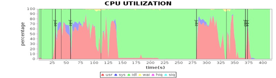

- 00 开篇词 为什么说每个软件工程师都应该懂大数据技术？.md.html
- 01 大数据技术发展史：大数据的前世今生.md.html
- 02 大数据应用发展史：从搜索引擎到人工智能.md.html
- 03 大数据应用领域：数据驱动一切.md.html
- 04 移动计算比移动数据更划算.md.html
- 05 从RAID看垂直伸缩到水平伸缩的演化.md.html
- 06 新技术层出不穷，HDFS依然是存储的王者.md.html
- 07 为什么说MapReduce既是编程模型又是计算框架？.md.html
- 08 MapReduce如何让数据完成一次旅行？.md.html
- 09 为什么我们管Yarn叫作资源调度框架？.md.html
- 10 模块答疑：我们能从Hadoop学到什么？.md.html
- 11 Hive是如何让MapReduce实现SQL操作的？.md.html
- 12 我们并没有觉得MapReduce速度慢，直到Spark出现.md.html
- 13 同样的本质，为何Spark可以更高效？.md.html
- 14 BigTable的开源实现：HBase.md.html
- 15 流式计算的代表：Storm、Flink、Spark Streaming.md.html
- 16 ZooKeeper是如何保证数据一致性的？.md.html
- 17 模块答疑：这么多技术，到底都能用在什么场景里？.md.html
- 18 如何自己开发一个大数据SQL引擎？.md.html
- 19 Spark的性能优化案例分析（上）.md.html
- 20 Spark的性能优化案例分析（下）.md.html
- 21 从阿里内部产品看海量数据处理系统的设计（上）：Doris的立项.md.html
- 22 从阿里内部产品看海量数据处理系统的设计（下）：架构与创新.md.html
- 23 大数据基准测试可以带来什么好处？.md.html
- 24 从大数据性能测试工具Dew看如何快速开发大数据系统.md.html
- 25 模块答疑：我能从大厂的大数据开发实践中学到什么？.md.html
- 26 互联网产品 + 大数据产品 = 大数据平台.md.html
- 27 大数据从哪里来？.md.html
- 28 知名大厂如何搭建大数据平台？.md.html
- 29 盘点可供中小企业参考的商业大数据平台.md.html
- 30 当大数据遇上物联网.md.html
- 31 模块答疑：为什么大数据平台至关重要？.md.html
- 32 互联网运营数据指标与可视化监控.md.html
- 33 一个电商网站订单下降的数据分析案例.md.html
- 34 A_B测试与灰度发布必知必会.md.html
- 35 如何利用大数据成为“增长黑客”？.md.html
- 36 模块答疑：为什么说数据驱动运营？.md.html
- 37 如何对数据进行分类和预测？.md.html
- 38 如何发掘数据之间的关系？.md.html
- 39 如何预测用户的喜好？.md.html
- 40 机器学习的数学原理是什么？.md.html
- 41 从感知机到神经网络算法.md.html
- 42 模块答疑：软件工程师如何进入人工智能领域？.md.html
- 所有的不确定都是机会——智慧写给你的新年寄语.md.html
- 第2季回归丨大数据之后，让我们回归后端.md.html
- 结束语 未来的你，有无限可能.md.html
- 捐赠
19 Spark的性能优化案例分析（上）
我们知道，现在最主流的大数据技术几乎都是开源的产品，不管是Hadoop这样的大数据存储与计算产品，还是Hive、Spark SQL这样的大数据仓库，又或者Storm、Flink这样的大数据流计算产品，还有Mahout、MLlib这样的大数据机器学习算法库，它们都来自开源社区。所以，我们在使用大数据、学习大数据的过程中肯定少不了要和开源社区打交道。
我在Intel工作期间主要工作就是参与Apache开源社区的大数据项目开发，其实上一期我讲的Panthera最初也是准备为Hive项目增强标准SQL处理能力而开发，但是因为和Apache Hive项目管理方在开发理念上的冲突，最终选择独立开源。后来我又参与了Apache Spark的开发，为Spark源代码提交了一些性能优化的Patch。我想通过专栏两期的内容，具体介绍一下如何参与Apache这样开源社区的软件开发，如何进行软件性能优化，以及我在Apache Spark源码上做的一些优化实践。
一方面我希望你能借此更深入、系统地了解软件性能优化；另一方面也可以更深入了解Spark的一些运行机制，同时也可以了解Apache开源社区的运作模式。因为我们在使用各类大数据产品的时候，一定会遇到各种问题，想要解决这些问题，你可以直接到官方的开源社区去求助并寻找答案。在使用过程中，如果这些大数据产品不能满足你的需求，你可以阅读源代码并直接对源代码进行修改和优化。因为你在实践过程中产生的需求可能其他人也会有，你可以将你修改的源代码提交到开源社区，请求合并到发布版本上，供全世界开发者使用。这也是开源最大的魅力。
你可能已经注意到，作为软件开发人员，日常我们使用的大量软件，基本上全部来自美国，不管是免费开源的Linux、Java、Hadoop、PHP、Tomcat、Spring，还是商业收费的Windows、WebLogic、Oracle，大到编程语言、操作系统、数据库，小到编程框架、日志组件，几乎全部来自美国。
软件，特别是开源软件，是没有国界的，属于全人类的技术财富。但是，我觉得我们还要承认，中美之间的技术差距真的很惊人。在当前这样一个中美贸易摩擦不断的背景下，难免让人有些忧虑。缩短这种技术差距也许非一日之功，但是更多的中国工程师参与到开源软件的开发中，让中国在世界软件技术领域获得很多影响力，也许是当下就可以迈出的一步。
Apache开源社区的组织和参与方式
Apache是一个以基金会方式运作的非盈利开源软件组织，旗下有超过一百个各类开源软件，其中不乏Apache、Tomcat、Kafka等知名的开源软件，当然也包括Hadoop、Spark等最主流的大数据开源软件。
Apache每个项目的管理团队叫项目管理委员会（PMC），一般由项目发起者、核心开发者、Apache基金会指定的资深导师组成，主导整个项目的发展。此外，项目的主要开发者叫作committer，是指有将代码合并到主干代码权限的开发者，而其他没有代码合并权限的开发者叫作contributor。
一般说来，参与Apache开源产品开发，先从contributor做起。一般的流程是，从GitHub项目仓库fork代码到自己的仓库，在自己仓库修改代码然后创建pull request，提交到Spark仓库后，如果有committer认为没问题，就merge到Spark主干代码里。
一旦你为某个Apache项目提交的代码被merge到代码主干，你就可以宣称自己是这个项目的contributor了，甚至可以写入自己的简历。如果能持续提交高质量的代码，甚至直接负责某个模块，你就有可能被邀请成为committer，会拥有一个apache.org后缀的邮箱。
当然我希望你提交的是有质量的代码，而不仅仅是对代码注释里某个单词拼写错误进行修改，然后就号称自己是某个著名开源项目的contributor了。虽然修改注释也是有价值的，但是如果你的pull request总是修改注释的拼写错误，很难被认为是一个严肃的开发者。
除了Apache，Linux、以太坊等开源基金会的组织和运作方式也都类似。就我观察，最近几年，越来越多来自中国的开发者开始活跃在各种重要的开源软件社区里，我希望你也成为其中一员。
软件性能优化
在熟悉开源社区的运作方式后，接下来我们就可以考虑开始进行性能优化了。但在上手之前，你是否清楚所谓性能优化具体要做些什么呢？
关于软件性能优化，有个著名的论断。
1.你不能优化一个没有经过性能测试的软件。
2.你不能优化一个你不了解其架构设计的软件。
不知你是否听过这个论断，我来解释一下。
如果没有性能测试，那么你就不会知道当前软件的主要性能指标有哪些。通常来说，软件的主要性能指标包括：
响应时间：完成一次任务（请求）花费的时间。
并发数：同时处理的任务数（请求数）。
吞吐量：单位时间完成的任务数（请求数、事务数、查询数……）。
性能计数器：System Load，线程数，进程数，CPU、内存、磁盘、网络使用率等。
如果没有性能指标，我们也就不清楚软件性能的瓶颈，优化前和优化后也是无从对比。这样的优化工作只能是主观臆断：别人这样做说性能好，我们也这样优化。
而如果不了解软件的架构设计，你可能根本无从判断性能瓶颈产生的根源，也不知道该从哪里优化。
所以性能优化的一般过程是：
1.做性能测试，分析性能状况和瓶颈点。
2.针对软件架构设计进行分析，寻找导致性能问题的原因。
3.修改相关代码和架构，进行性能优化。
4.做性能测试，对比是否提升性能，并寻找下一个性能瓶颈。
大数据软件性能优化
在大数据使用、开发过程的性能优化一般可以从以下角度着手进行。
1. SQL语句优化。使用关系数据库的时候，SQL优化是数据库优化的重要手段，因为实现同样功能但是不同的SQL写法可能带来的性能差距是数量级的。我们知道在大数据分析时，由于数据量规模巨大，所以SQL语句写法引起的性能差距就更加巨大。典型的就是Hive的MapJoin语法，如果join的一张表比较小，比如只有几MB，那么就可以用MapJoin进行连接，Hive会将这张小表当作Cache数据全部加载到所有的Map任务中，在Map阶段完成join操作，无需shuffle。
2. 数据倾斜处理。数据倾斜是指当两张表进行join的时候，其中一张表join的某个字段值对应的数据行数特别多，那么在shuffle的时候，这个字段值（Key）对应的所有记录都会被partition到同一个Reduce任务，导致这个任务长时间无法完成。淘宝的产品经理曾经讲过一个案例，他想把用户日志和用户表通过用户ID进行join，但是日志表有几亿条记录的用户ID是null，Hive把null当作一个字段值shuffle到同一个Reduce，结果这个Reduce跑了两天也没跑完，SQL当然也执行不完。像这种情况的数据倾斜，因为null字段没有意义，所以可以在where条件里加一个userID != null过滤掉就可以了。
3. MapReduce、Spark代码优化。了解MapReduce和Spark的工作原理，了解要处理的数据的特点，了解要计算的目标，设计合理的代码处理逻辑，使用良好的编程方法开发大数据应用，是大数据应用性能优化的重要手段，也是大数据开发工程师的重要职责。
4. 配置参数优化。根据公司数据特点，为部署的大数据产品以及运行的作业选择合适的配置参数，是公司大数据平台性能优化最主要的手段，也是大数据运维工程师的主要职责。比如Yarn的每个Container包含的CPU个数和内存数目、HDFS数据块的大小和复制数等，每个大数据产品都有很多配置参数，这些参数会对大数据运行时的性能产生重要影响。
5. 大数据开源软件代码优化。曾经和杭州某个SaaS公司的大数据工程师聊天，他们的大数据团队只有5、6个人，但是在使用开源大数据产品的时候，遇到问题都是直接修改Hadoop、Spark、Sqoop这些产品的代码。修改源代码进行性能优化的方法虽然比较激进，但是对于掌控自己公司的大数据平台来说，效果可能是最好的。
Spark性能优化
有了上面这些性能优化原则和过程，我们在了解Spark架构和代码的基础上，就可以进行性能优化了。
关于性能测试，我们使用的是Intel为某视频网站编写的一个基于Spark的关系图谱计算程序，用于计算视频的级联关系。我们使用5台服务器对样例数据进行性能测试，程序运行总体性能如下图。

这张图我在专栏Spark架构原理分析过。我们将4台Worker服务器上主要计算资源利用率指标和这张图各个job与stage的时间点结合，就可以看到不同运行阶段的性能指标如何，从而发现性能瓶颈。
-
 -
-
 -
-

从这些图我们可以看到，CPU、内存、网络、磁盘这四种主要计算资源的使用和Spark的计算阶段密切相关。后面我主要通过这些图来分析Spark的性能问题，进而寻找问题根源，并进一步进行性能优化。
下一期，我们一起来看几个Spark性能优化的案例，进一步了解Spark的工作原理以及性能优化的具体实践。
思考题
如果性能测试发现，网卡是整个系统的瓶颈，程序运行过程中网卡达到了最大I/O能力，整个系统经常在等待网卡的数据传输，请问，你有什么性能优化建议呢？
欢迎你点击“请朋友读”，把今天的文章分享给好友。也欢迎你写下自己的思考或疑问，与我和其他同学一起讨论。
© 2019 - 2023 Liangliang Lee. Powered by gin and hexo-theme-book.